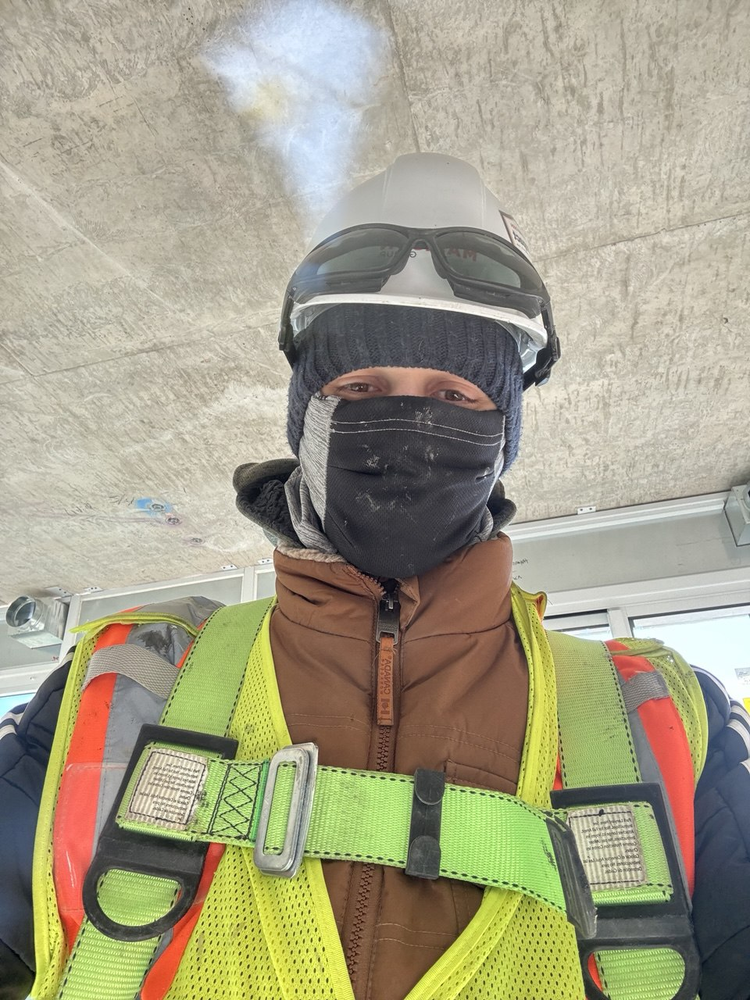

Vladyslav Yurkevych

Summary
I am a hardworking and dedicated individual with experience in construction, looking to transition into the field
of programming.
Education
- High School Diploma
- College, Economist
Work Experience
-
Construction Worker
March 2022 – Present
-
Participated in construction projects, ensuring quality and safety standards were met.
-
Worked collaboratively within a team, managing time and tasks efficiently to meet project deadlines.
-
Developed attention to detail, problem-solving, and communication skills.
-
Freelance Web Developer
January 2024 – Present
-
Worked on personal projects using HTML, CSS, and JavaScript to create websites.
-
Studying Python and solving problems on platforms like LeetCode and Codewars.
-
Exploring open-source contributions and building a portfolio to showcase coding skills.
Skills
- Programming Languages: Python, JavaScript (in progress) ⭐️⭐️⭐️
- Web Development: HTML, CSS ⭐️⭐️⭐️
- Problem Solving: ⭐️⭐️⭐️⭐️⭐️
Awards and Certifications
- Completed "Python for Beginners" – Coursera (2022)
- Completed "JavaScript Essentials" – FreeCodeCamp (2023)
Other